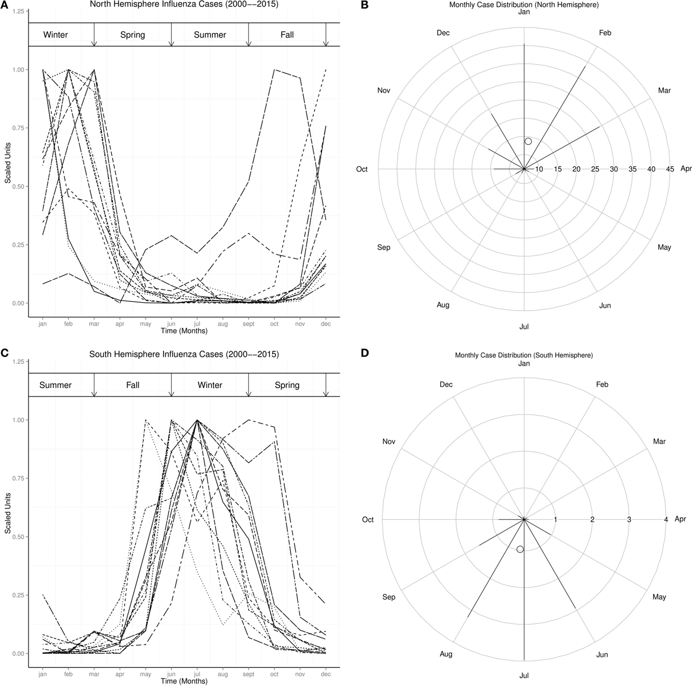
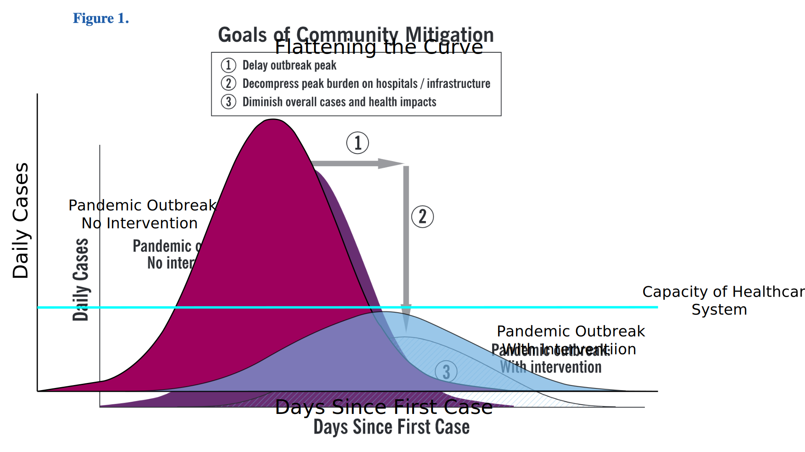
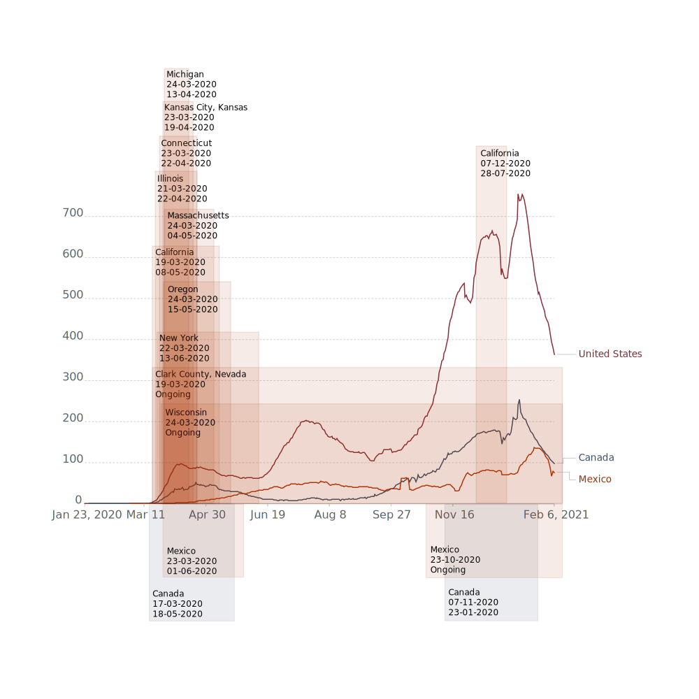
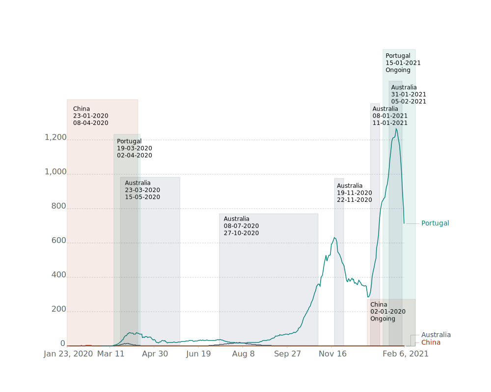

By Hemisphere
Lockdowns
In Focus
Conclusion
_
COVID-19 & Lockdowns
By Joseph Frederick Flynn | 3200165 on 8 February, 2021
COVID-19 otherwise known as the coronavirus and scientifically named severe
acute respiratory syndrome coronavirus 2 (SARS-CoV-2)
began spreading in the city of Wuhan in the province of Hubei, China in early December 2019 as the
first human cases were recorded. Subesquently the World Health Organization (WHO) declared the
coronavirus outbreak a public health emergency of international concern (PHEIC) on the 30th of
January, 2020 and since then the pandemic has spread all over the world causing the largest public
health emergency in living history[1].
For governments around the world, the advice from the WHO in response to the coronavirus pandemic
was to limit human contact, travel and social activity along with the wearing of face-masks and
constant hand washing or sanitising and good hygeine. As the virus spreads easily from human to
human, the best way to avoid contracting the coronavirus is to limit contact with other people as
much as possible. In the absence of effective treatments or a vaccine, governments rely on public
policy to contain the spread of the coronavirus. The policies used by governments around the world
are known as "lockdowns".
Different Governments around the world have different styles of lockdown, implementing a lockdown at
different times, and keeping their cities in lockdown for different amounts of time, while some
don't
lockdown at all. Lockdowns vary quite broadly depending on the politics of the people in power, the
people who live in those countries and cities, and the perceived threat of the coronavirus versus
the
psychosociological and economical problems that a lockdown presents. We do not
have the
luxury or knowledge of hindsight from any historical events where large lockdowns were implemented
in the
containment of an infectious virus and most decisions made have been from hypothetical but logical and
somewhat accurate models of how to slow the spread of the virus, therefore I have found it important to attempt to perform this data
analysis so as to understand the effectiveness and side-effects of such measures.
_
By Hemisphere
As it is understood that the coronavius is less infectious during the warmer
seasons due to the
fact that vitamin D is a good booster for the human immune system of which is abundantly available
to ingest via
sunshine, and the coronavirus is more infectious
particularly during winter when sunshine is limited. I will begin with a comparison of the Southern
and Northern Hemisphere and
how the data of the coronavirus over the last year relates to a data analysis from 2015 of Seasonal
Influenza Epidemics and El Niños
by hemisphere using the same countries analysed in this study[2].
The countries studied in the northern hemisphere were Austria, Belgium, Bulgaria, Canada, China,
France,
Germany, Hungary, India, Japan, Mexico, Netherlands, Norway, Poland, Romania, Russia, Spain, Sweden,
Switzerland,
United Kingdom, Ukraine, and the United States. Those in the southern hemisphere were Argentina,
Australia, Bolivia,
Brazil, Chile, New Zealand, Paraguay, Peru, South Africa, and Uruguay.

Seasonal Distribution of Influenza Wt is Winter, Sp is Spring, Sm is Summer, and Fa is Fall.
(A) Monthly plots of time series of influenza cases in north hemisphere.
(B) Radial plot of influenza cases in north hemisphere.
(C) Monthly plots of time series of influenza cases in south hemisphere.
(D) Radial plot of influenza cases in south hemisphere.
Source: https://www.frontiersin.org/articles/10.3389/fpubh.2015.00250/full
The image above is a set of graphs from the study which shows that the number of cases of influenza
peaks in the winter months in both the southern and northern hemisphere, highest in January for the
north and
July in the south.
Following this is mapped out a 7 day rolling average of new coronavius cases per million people in
the same countries
starting with the peak of the virus in China on the 17th of February, when it began to become
evident to be spreading
to other countries around the world.
At this time, there were only lockdowns in place within China while travel from China was becoming
increasingly restricted.

Over the winter in the southern hemisphere on the 30th of July it is clear to see that in South
America and Southern Africa
the virus had a higher rate of infection than anywhere in the northern hemisphere apart from the
United States, while Australia's
infection rate was a lot higher in the winter than what is recorded during the summer of the
southern hemisphere on the 24th of January, 2021.
At this time, we can also see that during the winter in the northern hemisphere, the number of new
cases in Europe and North America
was at it's worst across the board apart from in China, which had implemented a very strict lockdown
during the first wave of
infections on the 23rd through to March 8th in the province of Hubei. Although India seems to have
had a somewhat similar rate of infection over the year
likely because of it's proximity to the equator and not experiencing such large fluctuations in
temperature over the year.
Many of these countries have implemented various degrees of lockdowns and restrictions over the time
period and in the following chapter I
will be analysing a broad range of countries from all over the planet and what effect lockdowns have
had.
_
Lockdowns
What is a Lockdown?
A lockdown is "a temporary condition imposed by governmental authorities (as during
the outbreak of
an epidemic disease) in which people are required to stay in their homes and refrain from or limit
activities outside
the home involving public contact (such as dining out or attending large gatherings)"[3]. When a
lockdown is imposed, its
enforced by law and requires the shutdown of parts of the economy. There can be travel restrictions,
stay-at-home orders,
curfews, cancellation of recreational venues, closing of public spaces, closing of non-essential
production, closing of
schools and kindergartens, social distancing and border closures[4]. Many countries have imposed
some form of lockdown
on their citizens, whether it be on the national, state, province, regional or metropolitan level.
For the purpose of this analysis, I have distinguised lockdowns based upon the only singularly
cohesive source of information for
lockdowns by country that I could find, which was Wikipedia[5]. This is due to the fact that there
is no luxury of a dataset or cohesive
source of information based on past events, as the world is still in the middle of the pandemic. The
lockdowns I have chosen to
analyse are in regards to strict lockdown conditions, while many if not all governments have
restrictions in place in regards to
dealing with the coronavirus.
"Flattening the curve" otherwise known as "community mitigation" is a term coined by the Center for
Disease Control and Prevention (CDC)
in the United States in regards to making sure that the health care system of the country remains
capable of coping
with the amount of people who are in need of hospitilisation during the pandemic, as each country
only has a limited capacity
for providing health care to individuals at any one time due to the amount of hospitals, beds,
doctors, nurses and ventilators that
may be available. This is one of the main reasons for a government to implement a strict lockdown as
the amount of infection cases increase,
which they can exponentially. Lockdowns have shown to slow the rate of infection within a
population[6].
Below is a simple graphic example of the logic behind "flattening the curve"

In this analysis I have decided to compare 6 countries that have implemented lockdowns in duration
(as a total sum of all lockdowns in the country itself)
over 50 days, 6 countries that have implemented lockdowns for a total under 50 days as well as 6
countries that have not implemented lockdowns at all.
Countries have been chosen based upon their population and range of global influence and varying
geographical locations in order to get a more
equalateral view of the pandemic and how lockdowns might mitigate the risk of infection.
Long Lockdowns
Long Lockdowns have been categorised (in this analysis) as being a total of 50 or more days in
lockdown in total in one country. Regardless of where the lockdown
was imposed within the country itself, for the purpose of the simplification of the data I have
aggregated metropolitan, regional, state and national
lockdowns into the one country's profile. In the northern hemisphere I have decided upon comparing
India, the UK, France, Italy, and the Philippines. In the
south I have decided upon Brazil (Australia will be analysed in focus later in the study).
The below graph shows the daily new confirmed COVID-19 cases per million people and dates of
implementation, and realease of lockdowns by the countries outlined above
in a 7 day rolling average.

As we can see above in the beginning of the outbreak from March the numbers of coronavirus cases
began to rise, and in reaction to this the countries imposed
lockdowns onto their citizens. Each country has its own unique variables associated with how the
coronavirus may be transmitted and become a problem again after the
first initial lockdowns, although it is evidently required to have multiple lockdowns in a country
if the cases of coronavirus are exponentially increasing.
A lockdown is only as good as the awareness. There is some community mitigation evident in the
second wave of lockdowns, which has had an effect on France
and Italy, alough the UK seems to have been unable to contain the contageon until very recently.
Short Lockdowns
Short Lockdowns have been categorised (in this analysis) as being a total of under 50 days in
lockdown in total in one country.
In the northern hemisphere I have decided upon comparing Russia, Vietnam and Iran. In the
south I have decided upon South Africa, Ezuador and New Zealand.
The below graph shows the daily new confirmed COVID-19 cases per million people and dates of
implementation, and realease of lockdowns by the countries outlined above
in a 7 day rolling average.

In the data visualisation above, we can see the effect of implementing a lockdown out of season,
with South Africa having imposed a lockdown from late March
until the end of April 2020. The number of cases, as is expected along with the winter for the
southern hemisphere in July peaked at over 200 cases per million.
Although at this time, they did not attempt to implement another lockdown, and when the warmer
months came, the cases lowered only to rise exponentially again
in the winter. Russia, who implemented a lockdown at the end of March like many others, with cases
decreasing over the summer for the northern hemisphere did
not implement another lockdown and saw an increase in cases over the winter, although it is
speculative to consider wether a lockdown would have done much to change the spread
of the coronavirus considering the UK's unfruitful lockdown efforts.
No Lockdowns
No Lockdowns have been categorised (in this analysis) as being a total of 0 days in lockdown in one
country.
In the northern hemisphere I have decided upon comparing Sweden, Japan, Estonia and South Korea. In
the
south I have decided upon Indonesia and Chile.
The below graph shows the daily new confirmed COVID-19 cases per million people in a 7 day rolling
average.

Here we are able to see that lockdowns might not have much effect over the spread of the coronavirus
with similar if not less cases per million people than those
countries that did impose long lockdowns. It may be that the social understanding of how to behave
as an individual during the pandemic is
more pertinent in the countries analysed above. Although mainly we can see that the coronavirus
propagates
more during the winter and receeds during the summer months, there is no evidence to suggest that
imposing a lockdown in these countries would greatly reduce
the amount of new coronavirus infections, although if it were evident that cases were out of control
then lockdowns would have been
a useful thing to implement but again, here there is no evidence to suggest that it is necessary.
Outlier: The United States of America
Taking a global scope of the toll of the coronavirus must always be inclusive of
such outliers, and as the US is something unto itslef
being almost as complicated as the entirety of Europe itself. The US has the most amount of cases in
the world, being 27,690,715 - almost 17 million more than
it's runner up India, whose population is 1,380,004,385 while the US population is 331,002,65.
Including such an outlier requires an individual analysis,
so I will compare the data here consisting of the US with it's 3 closest neighbours: Canada, Mexico
and Cuba, mapping out the dates
of lockdowns in the US by state, county and city, Mexico and Canada's lockdowns will be shown for
the whole counties as direct comparisons.
The below graph shows the daily new confirmed COVID-19 cases per million people in a 7 day rolling
average and dates of implementation and realease of lockdowns in the US, Mexico and Canada.

We can see that the outbreak of the coronavirus in the US was constrained through the use of
lockdowns at the start of the pandemic.
There was another wave of cases that came about in the summer, which is uncommon for countries in
the northern hemisphere as we can see with Canada. This should have rung
alarm bells for the CDC with winter on its way later in the year. But by the time the winter came
around, there was only one state in the US that had implemented a
lockdown, which was California. It seems to have slowed the rate of infection, but after that
lockdown ended, the cases of new infections continued to rise. Now
with the weather starting to get a bit warmer, and maybe the citizens of the US being more conscious
of the risks that the coronavirus poses, the number of new cases
has slowed to just over 360 per million people. Canada and Mexico's lockdowns seem to have been
effective in containing the virus considering
the difference of new infections with the US, although the numbers are consistent with the
coronavirus being more problematic during the winter and Canada being further north
than Mexico, therefore more likely for more infections.
_
In Focus
Unemployment and Gross Domestic Product
I would have liked to be able to analyse the mental health costs that are known to
be evident due to the pandemic,
those being suicide and depression. Although this data is not available to the public and if it is,
it is from 4 years ago. Therefore
I have collated the unemployment rates (%) and real GDP growth of the countries analysed above, of
which play an integral role in
the mental health of the population, because if you have lost your work due to the pandemic it is
safe so assume that you will be experiencing
some drepression, and in some cases this can lead to suicide, of which has only been recently
studied in Japan[7].
Long Lockdowns:
Short Lockdowns:
No Lockdowns:
Outlier: The United States of America:
The economical and associated mental health toll that the coronavirus and associated lockdowns have
taken on the populations of
the countries in the evidential data displayed above is concerning, The single most pertinent issue
surrounding lockdowns is
their negative effects on the economy and the effects to mental health and wellbeing that they
amplify. This is a condition of the pandemic itself,
so the numbers may reflect the true toll of the coronavius in its complexity. It will be interesting
to see the data on how the pandemic has effected
the mental health of populations comparing different levels of lockdowns and no lockdowns, for the
real effects to be fully considered.
It is evident that the less lockdowns are imposed onto a country and the population, the better that
country's economy will be for it. Although
to have no recession in the economy at all and an increase in unemployment during this time is very
rare.
From China to Australia to Portugal
My own personal experience of the coronavirus and lockdowns is a unique one that
started when China's first lockdowns began and through to the lockdowns in
Australia in Melbourne and now currently experiencing more lockdowns again in Portugal.
The below graph shows the daily new confirmed COVID-19 cases per million people in a 7 day rolling
average and dates of implementation and realease of lockdowns.

China put a harsh lockdown on Hubei province from the 23rd of January 2020 and the entire country
was closed along with all shopping centers and
public places, even Shanghai where I was working at the time. Temporary workers and tourists were
leaving China as fast as they could so they wouldn't
get stuck there or get sick because at that time the full scale of the danger was unknown. This
lockdown worked for China and they managed to get the
coronavirus under control in the country, and were able to fully open back up by the 8th of April. I
returned to Australia in February, which soon after went into
a national lockdown that ended on the 15th of May, lasting just under 2 months. Following this and
during the winter of the southern hemisphere there was
an increase in cases in the city of Melbourne where I was living and a long lockdown lasting for 111
days was implemented and only lifted once there
were zero new cases reported for 2 weeks in a row. Towards the end of the Melbourne lockdown
I moved to Portugal for study, which had
implemented a lockdown earlier in the year for a couple of weeks.
This had some effect in slowing the rate of infection, although there was no need to continue to
enfore a lockdown as the summer was coming.
Recently Portugal has had to implement another lockdown on its citizens, which started on the 15th
of January 2021 because the amount of new cases per million
people dramatically increased over the winter for Portugal in the northern hemisphere and hospitals began to
become overloaded. Due to this lockdown cases have started to
drop dramatically, it was initially planned to end the lockdown on the 14th of February although it is
possible that the lockdown may be extended for 2 more weeks. China had discovered some new outbreaks in Hebei province and has recently
implemented new lockdowns, while some cities in Australia
also implemented lockdowns after finding a few new cases of the coronavirus that only lasted no more
than five days.
As we can see above, China has not suffered too much from the pandemic, even though the coronavirus
originated there. Ausralia has suffered somewhat of a recession,
but as per usual, being a small population, so far away with a good economy it has not been effected
too greatly by the pandemic. Portugal on the other hand,
has suffered quite the blow to it's economy, being a popular tourist destination the coronavirus put
everyone's plans on hold indefinetely and with the very high amount
of new cases per million, it seems like it will take some time to recover once the pandemic is over,
if it ever ends.
_
Conclusion
Lockdowns have been used effectively in a number of countries such as China and New Zealand and
Australia in an attempt to stamp out the coronavirus completely, which should be
the real goal for a lockdown. Although in a lot of cases this is not possible, it may be that the
coronavirus is already too far spread though the community in order to be able to
track thoroughly enough who has contracted it know as "contact tracing" or it may be that a lockdown
is not economically viable for the people living in the country. It does seem that
once the coronavirus has infected the population with many community transmissions, and is spread
throughout the country, it is not effective or worthwhile to try to abolish the coronavirus
completely through the use of lockdowns. I would not recommend imposing a lockdown unless the number of daily new cases gets out of control
like they had in Portugal and it was required in order to releive the strain on the healthcare system of the country.
Due to the economic, social and mental health impacts of imposing
lockdowns, they are not a long term answer and there needs to be another way that is more socially
and economically appropriate to deal with the threat of a pandemic. Community awareness
is a key strategy, as is contact tracing when it can be done well and the population is compliant.
The coronavirus is a threat mainly during the winter months and gets better in the summer months of
the year, similar to influenza and this
should be taken into account when a government is considering a lockdown.
It is also evident that psychological impacts along with
domestic violence, suicide and other such unfortunate behaviours have increased as a direct result
of lockdowns[8], and although data for these problems is not publicly available it is possible to correlate the data from
unemployment rates and GDP with these issues. In some cases a lockdown
is not necessary at all and the pandemic can be handled with some light restrictions and good
community awareness but in others it is necessary, especially if the goal of the country is to
completely eradicate the coronavirus without a vaccine.
Data Sources:
Our World in Data, https://ourworldindata.org/coronavirus
International Monetary Fund, https://www.imf.org/
Satista, https://www.statista.com/
Worldometer, https://www.worldometers.info/
acaps, COVID-19 Government Measures Dataset,
https://www.acaps.org/covid-19-government-measures-dataset
Wikipedia, COVID-19 Lockdowns, https://en.wikipedia.org/wiki/COVID-19_lockdowns
Bibliography:
[1] Advice for the public on COVID-19 – World Health Organization. Who.int. (2021). Retrieved 5
February 2021, from
https://www.who.int/emergencies/diseases/novel-coronavirus-2019/advice-for-public#:~:text=Maintain%20at%20least%20a%201,of%20being%20around%20other%20people.
[2] Oluwole, O. (2015). Seasonal Influenza Epidemics and El Niños. Frontiers In Public Health, 3.
https://doi.org/10.3389/fpubh.2015.00250
[3] Definition of LOCKDOWN. Merriam-webster.com. (2021). Retrieved 6 February 2021, from
https://www.merriam-webster.com/dictionary/lockdown.
[4] Social distancing. En.wikipedia.org. (2021). Retrieved 5 February 2021, from
https://en.wikipedia.org/wiki/Social_distancing.
[5] COVID-19 lockdowns. En.wikipedia.org. (2021). Retrieved 4 February 2021, from
https://en.wikipedia.org/wiki/COVID-19_lockdowns.
[6] Interim pre-pandemic planning guidance : community strategy for pandemic influenza mitigation in
the United States :
early, targeted, layered use of nonpharmaceutical interventions. Stacks.cdc.gov. (2021). Retrieved 7
February 2021, from https://stacks.cdc.gov/view/cdc/11425.
[7] Tanaka, T., & Okamoto, S. (2021). Increase in suicide following an initial decline during the
COVID-19 pandemic in Japan.
Nature Human Behaviour. https://doi.org/10.1038/s41562-020-01042-z
[8] Every-Palmer, S., Jenkins, M., Gendall, P., Hoek, J., Beaglehole, B., & Bell, C. et al. (2020).
Psychological distress, anxiety, family violence, suicidality, and wellbeing in New Zealand during the
COVID-19 lockdown: A cross-sectional study. PLOS ONE, 15(11), e0241658. https://doi.org/10.1371/journal.pone.0241658